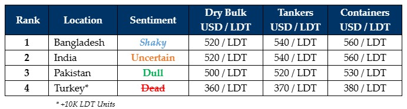

inWeekly Demolition Reports17/06/2024

In light of the jaw-rattling Baja speed runs that the Indian sub-continent ship recycling economieshave subjected Ship Owners & Cash Buyers to over recent weeks, they (the jaw-rattling speed runs) have increasingly set the stage for another knuckle-biter of a third quarter, given that
– (confusing) budgets were announced in both Bangladesh & even Pakistan this week,
– taxes & duties are to be imposed on FO / LO on incoming vessels in Bangladesh,
– India’s first post-Election budget is due in July under the freshly formed coalition government,
– Alang Recyclers are still fresh in the wake of post-election abnormalities that are expected to become the norm,
– a Turkish market that is still figuring out which way the river is flowing,
– an expected increase in freight rates over the next few weeks as the Red Sea Shipping Lanes face increasing incursions on commercial liners, and finally,
– fundamentals across the recycling board that are collectively jiggling their sides again, the top global ship-recycling destinations look like they desperately need the intervention of one Mr. ‘Shaken, Not Stirred’, to successfully even out industry wide prime movers & calm the seas for at least the immediate future, if not the rest of the year.
Firming global freight rates have left the global ship recycling industry on life support over the last +5 quarters, whereby not only has wet tonnage almost completely steered cleared of the bidding tables (for now), but firming dry rates are forecasted to further do so through July, ensuring that despite global warming likely to deliver a wetter than usual monsoon, ongoing economic circumstances are forecasted to keep domestic recycling yards drier through the rains (especially in Bangladesh & Pakistan). Pakistan’s budget announcement this week also seems to have delivered negative news for the nation whereby income taxes are reported to climb in anticipation of an upcoming tranche of IMF funding.
Smack in the middle is the Indian stock market that suffered sudden falls amidst the alarming possibility that PM Modi’s BJP party might not bag the votes needed to hold on to 272 seat majority in the Parliament in order to maintain unfettered control over the nation’s economy, one that has registered further declines in fundamentals ever since. Finally, Turkey remains silent, both in performance and thereby in this report – at least until fresh tonnage electro-cardio-shocks this market enough to report something. Q3 seems increasingly destined to be the worst quarter for Turkish ship recycling since January 2023.
For week 24 of 2024, GMS demo rankings / pricing for the week are as below.

📄 Download PDF: Ship-recycling-market-insight-Week-24-6-14-2024-Shaken_Not_Stirred.pdfSource: GMS,Inc.https://www.gmsinc.net/gms_new/index.php/web